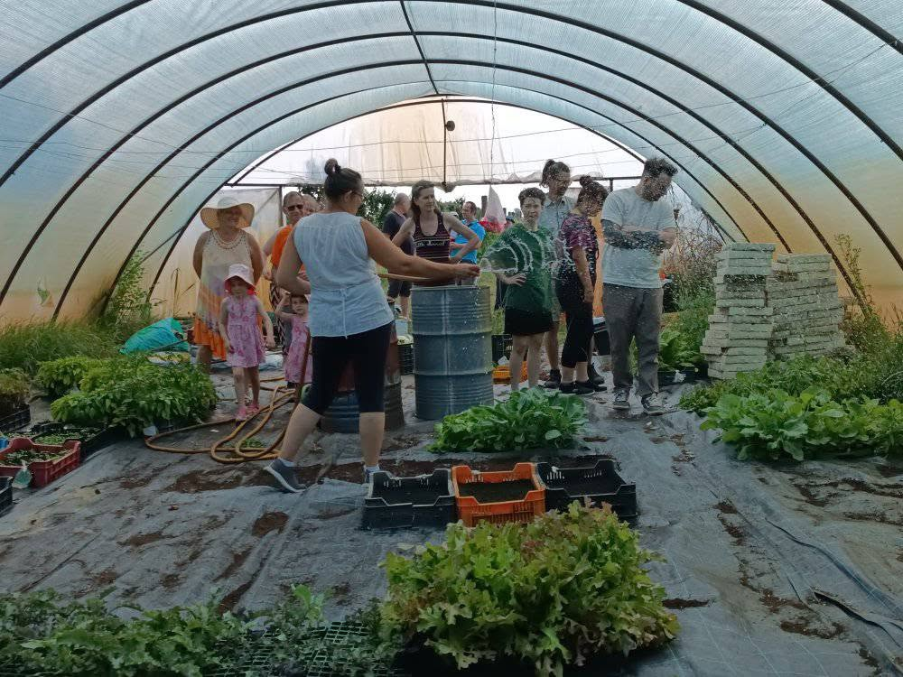

Birs Közösség
Jelentkezés

Jelentkezés
Jelenleg a magas érdeklődés miatt várólistát vezettünk be, ahova az újonnan csatlakozott tagok kerülnek. Így tudjuk a legtisztességesebben elosztani a tagok számát.
A szezon jövő áprilisban indul majd, de a várólistára már most fel tudsz iratkozni.
A 2026-os szezon 90 fővel indult, amit későbbiekben is próbálunk tartani.
A tagok számára van évente lehetőség egy úgynevezett kertlátogatásra, ahol megismerhetik azt a környezetet ahol a gazdaság folyik, és tanulhatnak a mezőgazdaságról.
Ez általában június közepén kerül megszervezésre és mindig jó hangulatban zajlik.
Körbejárhatják a kertet és megismerhetik a termesztési folyamatokat.
